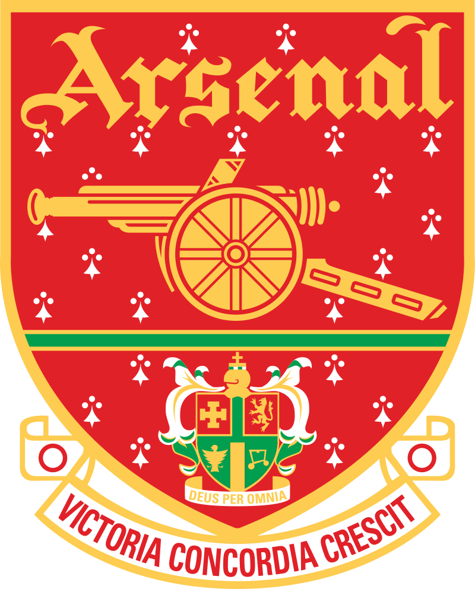

es un club de fútbol profesional con sede en Holloway, Londres, Inglaterra, que juega en la máxima categoría del fútbol de ese país, la Premier League. Uno de los más laureados del fútbol inglés, ha ganado 43 títulos en su país, incluyendo 13 campeonatos de liga y un récord de 13 Copas de Inglaterra; también ha ganado dos títulos internacionales: la Copa europea de Ferias en 1970 y la Recopa de Europa en 1994.
El Arsenal Football Club fue fundado formalmente en 1886 bajo el nombre de «Dial Square» por empleados del área del mismo nombre del Royal Arsenal, una fábrica de armamentos en Woolwich, en el sudeste de Londres. El club cambió su nombre a «Woolwich Arsenal» después de convertirse en sociedad anónima en 1893. El club se convirtió en el primero del sur de Londres en ser admitido en la Football League. Desde 1893 a 1904, el Woolwich Arsenal jugó en la extinta Segunda División de la Football League (segunda categoría), hasta lograr el ascenso a la First Division (máxima categoría) en 1904.
Desde la fundación del club, el Arsenal ha tenido múltiples escudos (o crestas), todos ellos con pequeñas modificaciones. El primer escudo de Royal Arsenal contó con tres cañones orientados hacia arriba, apuntando hacia el norte, similar al escudo de armas de la Ciudad metropolitana de Woolwich (hoy trasladado a la escudo de armas de la ciudad real de Greenwich). Estos a veces puede ser confundidos con chimeneas, pero la presencia de una cabeza de león tallada y un cascabel a cada lado son indicadores claros de que son cañones. Este escudo dejó de utilizarse después de la mudanza a Highbury en 1913, sólo para ser reinstalado en 1922; ese mismo año, el club adoptó el primer escudo con un solo cañón, apuntando hacia el este. Este escudo sólo fue usado hasta 1925, cuando el cañón se cambió de orientación hacia el oeste y a la izquierda de éste figuraba el apodo del equipo, The Gunners.
El Emirates Stadium fue llamado así después de que se firmara un contrato con la empresa de aerolíneas Emirates por £100 millones, el contrato más grande de este tipo en Inglaterra en la historia.No obstante, algunos fanáticos se refieren al estadio como «Ashburton Grove» o «The Grove», ya que no están de acuerdo con que un estadio lleve un nombre de una empresa.57El estadio será conocido oficialmente como el «Emirates Stadium» al menos hasta el 2028, y la compañía aérea será la patrocinador de la camiseta del club hasta el final de la temporada 2018-19.58 Desde el inicio de la temporada 2010-11 en adelante, las gradas del estadio han sido oficialmente conocida como «North Bank», «East Stand», «West Stand» y «Clock End».59